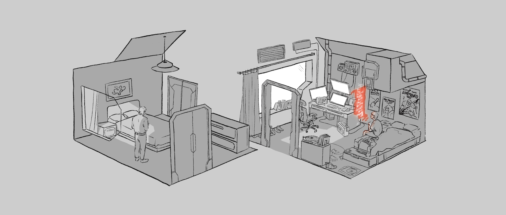
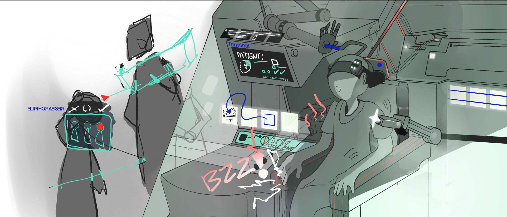
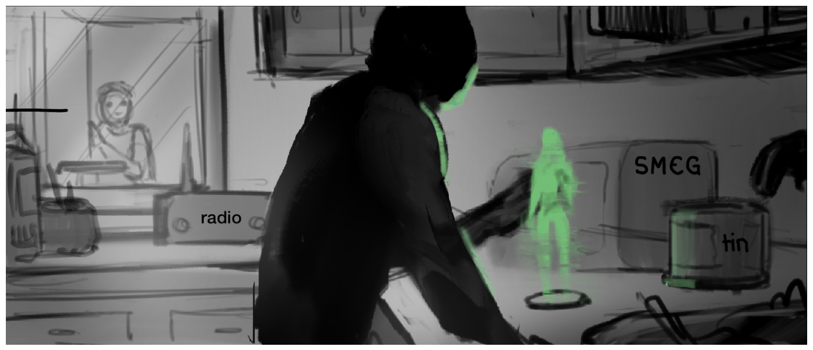

The Second Shift — Concept Art
In a society where men and women can't be awake at the same time, a teenage hacker is pulled into a hidden world by a plum-haired girl from the other side of the clock, and they discover the person who once saved their city is hiding the only thing that can reunite it.
The Scroll
Artist: Pei Yuan Li [Website]

Like most men of his generation, my father preferred Scroll to BubbleTalk. Less cute. More sepia. I tapped on the app's icon and a projection of an ancient scroll appeared over my bed. Words began to bleed into the shimmering parchment, but in Segra Script, the default font. I don't do cursive.
"Change font. Courier."
I began to read.
Sorry
My boy
Not good with emotions
They seem to steal my tongue
Will use my fingers instead
I waited. The bottom edge of the scroll extended several inches.
I chose you
My boy
Not because the city made me
My choice
Best I ever made
I looked away for a moment, sucked in air. The scroll shook and the words slid off, drifting away as they fell. I looked back. The shadow of more text appeared. It grew darker and came into focus.
The Implant
Artist: Jeremy Chan [Website]

The hospital morphed into a high-tech lab. Two scientists stood with hands on chins, examining a 3D projection of a tiny device. The video zoomed in as the object slowly rotated. It was a clear capsule with a microchip inside. Thousands of hair-thin optic fibers covered the surface, curling and drifting like jellyfish tentacles.
The student in front of me rubbed the back of his head and shifted in his seat.
"Researchers tried everything to fight the virus," said the narrator. "Nothing worked. But they noticed something strange. Patients with sleep disorders in an unrelated biotech experiment weren't getting sick."
The video panned right and pulled back to reveal several research subjects in medical exam chairs. Dozens of wires extended from their heads to diagnostic machines.
Robotic arms with long, thin needles lowered and slid into the backs of their skulls.
Good thing they sedate us for that, I thought, grimacing.
"A cutting-edge brain implant suppressed the symptoms—not a cure, but a discovery that saved countless lives. There was, however, a complication."
The Tin
Artist: Kels Biersteker [Website]

He took a deep breath and reached up, pushing aside mugs we no longer used. His fingertips found the side of an old coffee tin. He coaxed it forward in a slow spin until it tipped into his other hand.
After setting it on the counter and removing the lid, he stared inside. He placed both hands on the counter, spread wide. His eyes never left the can.
My father didn't speak much, and our sparse conversations were generally about work or school or what to have for dinner. Not deep. I always thought it was because he had little to say, not because he had things to hide.
Finally, he put a hand inside. He pulled out a glass tab the size of a cracker. It was yellow from age. He laid it on the counter, beside the can, and tapped it once.
A hologram appeared, struggling to stay visible. It flickered for several seconds before stabilizing. Still jittery, but there. It was a woman. Her face was framed by long, straight hair. Couldn't tell the color. The projection was all a muted green. The woman tilted her head and laughed. She was beautiful. My father reached out to her, tried to touch her hair. His fingertips glowed in the light.
The Swarm
Artist: Lei Huang [Website]

Click-clack. Click-clack. Click-clack. Click-clack. Click-clack. Click-clack. Click-clack.
Four rows of identical bots streamed down the alley wall onto the asphalt. Hundreds of them. They swarmed Teddy and Little Todd, crawling up pant legs, disappearing down sleeves. Big Todd tried to run. Too late. In a blink he was covered—an undulating mass of skittering metallic legs.
That's when the sparks began. The bots appeared to be zapping Teddy and the Todds. Little pops of light exploded beneath their clothes. They pulled off their shirts, clawing at their torsos. Manic screams echoed through the alley. All three sprinted out into the street, shirtless and shimmering at low-voltage. They turned the corner and disappeared, howls cascading down Magpie Avenue.
Not sure why I was spared. Wasn't going to stick around to find out. I tried to run but slipped on a puddle of pig blood. Face-planted on the pavement. The click-clack of the spiders stopped. Replaced by the sound of footsteps. They got louder. Closer. Real close. Then they stopped too.